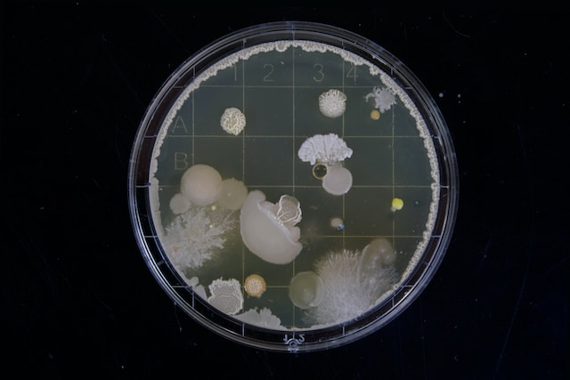
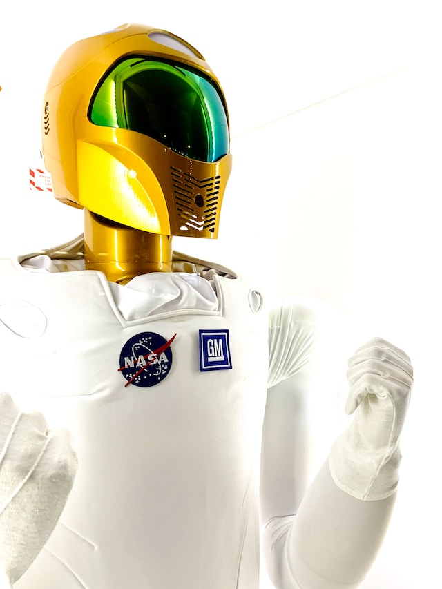
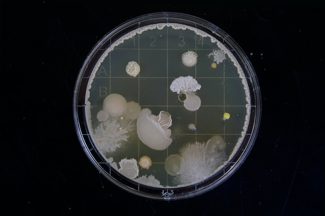
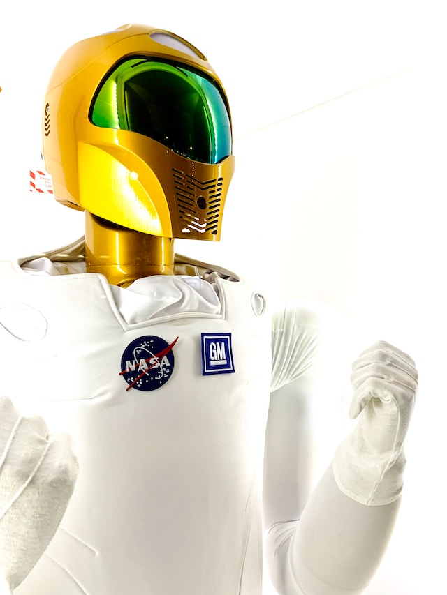
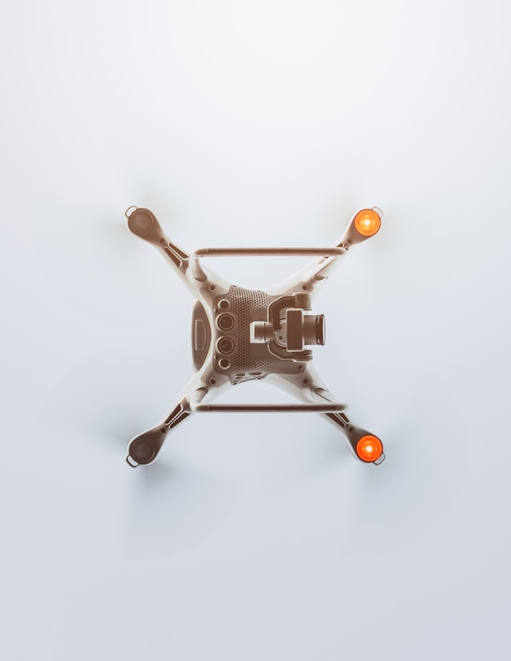
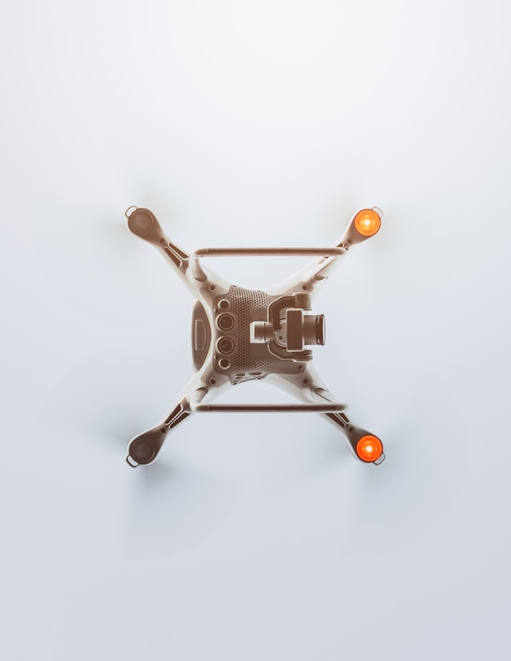

Novedades Principales
Inteligencia artificial para detectar el cáncer de mama
Investigadores de la Universidad de Lund (Suecia) han desarrollado un sistema de inteligencia artificial que puede detectar el cáncer de mama con una precisión del 98%. El sistema utiliza imágenes de mamografía para identificar pequeños tumores que pueden ser difíciles de detectar por los radiólogos..
Fecha actualizacion: 04/09/2023
Primera misión espacial para estudiar el Sol
India lanzó el 23 de mayo de 2023 su primera misión espacial para estudiar el Sol. La sonda Aditya-L1 estudiará las capas más externas del Sol y la dinámica del clima espacial durante cinco años.
Fecha actualizacion: 04/09/2023
Nuevas evidencias de vida en Marte
Científicos de la NASA encontraron nuevas evidencias de vida en Marte. Los investigadores descubrieron moléculas orgánicas en rocas marcianas que podrían ser el resultado de la actividad biológica.
Fecha actualizacion: 04/09/2023
Coches autónomos que ya circulan por las carreteras
Coches autónomos ya circulan por las carreteras de Estados Unidos, Europa y China. Estos coches utilizan sensores y cámaras para detectar el entorno y navegar de forma autónoma.
Fecha actualizacion: 04/09/2023
Nuevas tecnologías para curar la diabetes
Investigadores están desarrollando nuevas tecnologías para curar la diabetes. Estas tecnologías incluyen la terapia génica, la terapia celular y los implantes de células pancreáticas.
Fecha actualizacion: 04/09/2023
Nuevas vacunas para protegernos de las enfermedades
Investigadores están desarrollando nuevas vacunas para protegernos de las enfermedades. Estas vacunas incluyen vacunas contra el VIH, el cáncer y el ébola.
Fecha actualizacion: 04/09/2023
Nuevas tecnologías para reducir el impacto ambiental
Investigadores están desarrollando nuevas tecnologías para reducir el impacto ambiental. Estas tecnologías incluyen la energía solar, la energía eólica y la captura de carbono.
Fecha actualizacion: 04/09/2023
Nuevas formas de comunicación entre humanos y máquinas
Investigadores están desarrollando nuevas formas de comunicación entre humanos y máquinas. Estas tecnologías incluyen la realidad virtual, la realidad aumentada y la interfaz cerebro-computadora.


 



 
